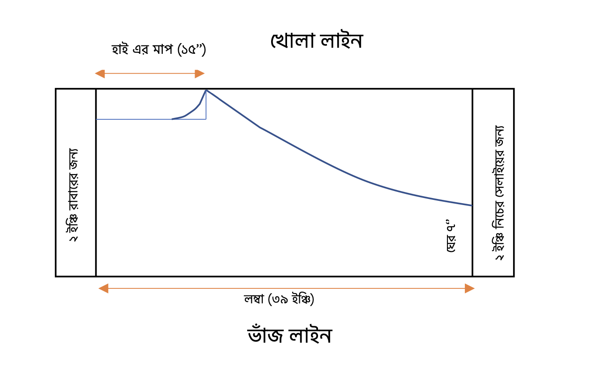

নরমাল সেলোয়ারের জন্য ৩ টি মাপ নেয়া হয়-
লম্বা: ৩৯ ইঞ্চি (কোমড় থেকে টাখনু পর্যন্ত)
হাই: ১৫ ইঞ্চি
ঘের: ১২ ইঞ্চি (১২/২ = ৬ ইঞ্চি, এর সাথে ১ ইঞ্চি সেলায়ের জন্য, সর্বমোট ৭
ইঞ্চি)

নরমাল সেলোয়ার প্যাটার্ন ডায়াগ্রাম
হাই বের করার সহজ উপায়:
লম্বা কে ৩ দিয়ে ভাগ করে এটার সাথে ২ যোগ করলে হাই এর পরিমাপ পাওয়া যায়
এখানে লম্বা হচ্ছে ৩৯। ৩৯/৩ = ১৩ + ২ = ১৫
ঘের:
নরমাল সেলোয়ারের ঘেরে মাপ সাধারণত ১০ থেকে ২০ ইঞ্চি পর্যন্ত হয়।